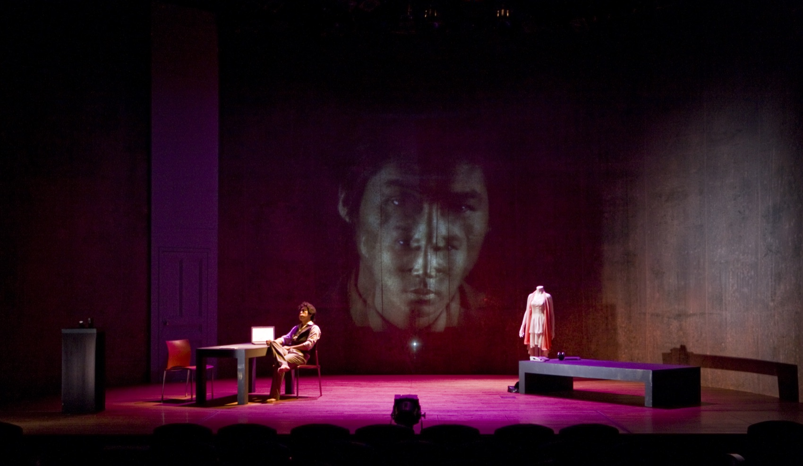
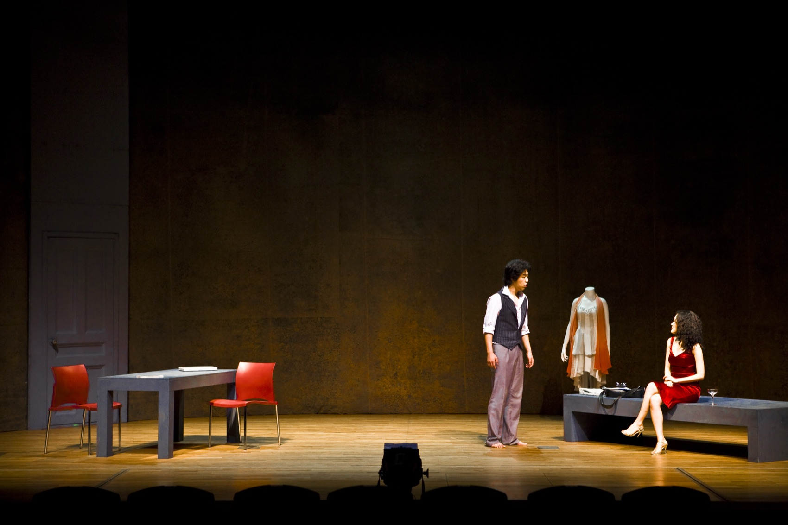
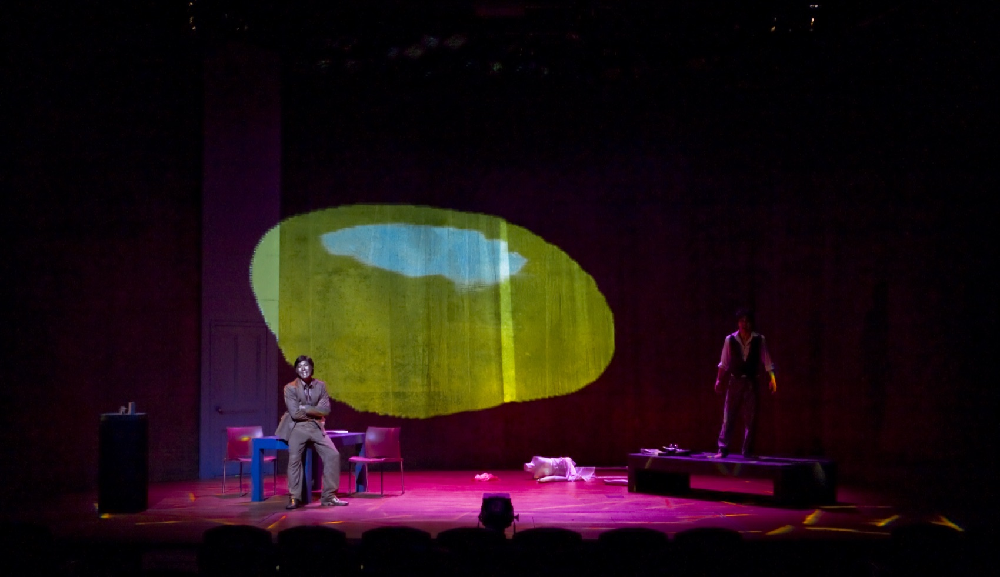
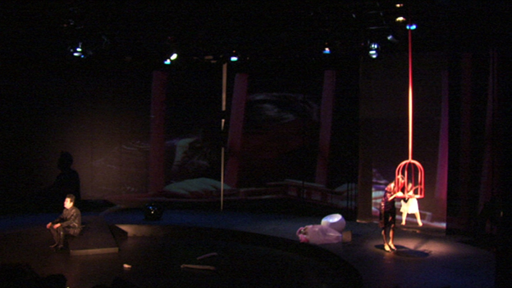

Performance — 2008 · 2010
I Gave Coffee
to a Bird난 새에게 커피를 주었다 · 허송세월 프로젝트
고층 오피스텔, 빈 새장, 마네킹, 그리고 ‘나’ — 죽음의 무의식과 삶의 아이러니 사이를 여행하는 비주얼 씨어터.
A high-rise studio, an empty birdcage, a mannequin, and ‘I’ — visual theatre travelling between the unconscious of death and the irony of living.
1995년 박상현 연출로 초연된 김학선의 희곡이 13년 만에 다시 태어났습니다. 프로스트의 ‘가지 않은 길’을 읽는 목소리로 열리는 무대에는 서른 살쯤의 ‘나’와, 나의 내면인 여자(새)와 목소리, 나의 분신인 마네킹이 등장합니다. 인간은 구체화할 수 없는 복잡한 층위로 중첩되어 있고, 그 복잡한 알고리즘을 떠다니는 죽음의 무의식, 성적 욕망, 마네킹은 인간 존재에 관해 질문을 던집니다. 자살이라는 소재의 시의성과 삶의 아이러니라는 보편성 — 그 통점 위에 극이 세워졌습니다.
연출은 대사보다 이미지로 말합니다. 배우의 몸짓은 느림과 빠름, 구상과 추상 사이의 반복되는 리듬으로 형상화되고(마임 오쿠다 마사시), 영상언어와 어우러져 시간과 공간의 차원을 넘나듭니다. 몽타주는 A+B=AB가 아니라 A+B=C — 연결과 충돌의 안배가 극의 리듬을 만듭니다. 무대는 하나의 커다란 새장이며, 새장=창(windows)=스크린의 로직으로 영상과 맞물립니다. 그리고 마지막, 공연 중 레코딩된 관객 자신의 모습이 프로젝션됩니다 — 프로시니엄에 커다란 거울을 내리는 장면입니다.
Kim Hak-seon’s play, first staged in 1995 by Park Sang-hyun, was reborn thirteen years on. Opening with a voice reading Frost’s ‘The Road Not Taken,’ the stage holds ‘I,’ a man of about thirty; the woman (a bird) and the voice, his inner images; and a mannequin, his double. Humans are layered beyond depiction, and drifting through that algorithm, the unconscious of death, sexual desire, the mannequin put the question of existence. The direction speaks in images before words: the actors’ gesture — slow and fast, figurative and abstract — takes shape as repeating rhythm (mime by Okuda Masashi), crossing dimensions with the video language. Montage here is not A+B=AB but A+B=C; the batting of linkage and collision makes the play’s rhythm. The stage is one great birdcage, meshed with video by the logic of cage = window = screen. And at the end, footage of the audience themselves, recorded during the show, is projected — a great mirror lowered onto the proscenium.
- 작
- Written by
- 김학선 Kim Hak-seon
- 각색·연출·영상
- Adaptation, direction, video
- 김제민 Kim Jae Min
- 마임·안무
- Mime & choreography
- 오쿠다 마사시 Okuda Masashi
- 제작
- Produced by
- 허송세월 프로젝트 — ‘비워 보낸다’는 뜻의 비주얼 씨어터. 극단 거미의 전신이 되는 프로젝트 그룹으로, 디지털 시노그라피 메소드를 시도했다.
- Empty Time Project — a visual theatre named for ‘sending off empty,’ the forerunner of Theatre Company Geomi, attempting a digital scenography method.
- 지원
- Support
- 한국문화예술위원회 신진예술가(2007) · 경기문화재단 제작지원(2008)
- ARKO Young Artist (2007) · GyeongGi Cultural Foundation (2008)
- 키워드
- Keywords
- birdcage · mannequin · montage A+B=C · audience mirror
연혁 — 세 번의 무대
History — three stagings
2008 초연에서 2010 재공연까지
From 2008 to the 2010 revival
2008
고양아람누리 새라새극장
Goyang Aram Nuri, Saerasae
경기문화재단 무대공연작품 제작지원 선정작으로 초연. 거대한 얼굴의 프로젝션과 마네킹, 새장의 무대가 처음 세워졌다.
The premiere, supported by the GyeongGi Cultural Foundation — the giant projected face, the mannequin and the cage-stage first raised.
2008
밀양여름공연예술축제
Miryang Summer Festival
젊은 연출가전에 초청되어 브레히트극장에서 공연.
Invited to the Young Directors’ showcase, at the Brecht Theater.
2010
LIG아트홀 — 링키지 프로젝트
LIG Art Hall — Linkage Project
LIG아트홀의 링키지 프로젝트로 재공연. 초연 당시 기술적 한계로 미뤄 두었던 관객 레코딩-프로젝션 장면이 본래의 구상대로 완성되었다.
Revived through the LIG Art Hall Linkage Project — the audience-recording projection, deferred at the premiere for technical limits, at last realised as conceived.
공연 기록 — 2008 · 2010
Performance record — 2008 · 2010


